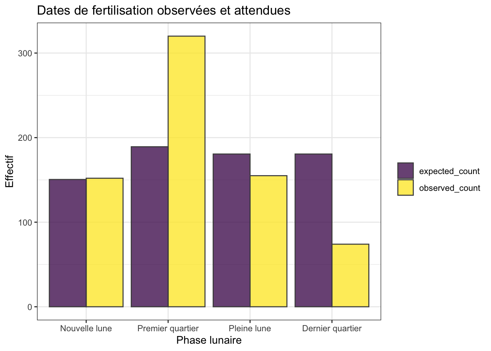
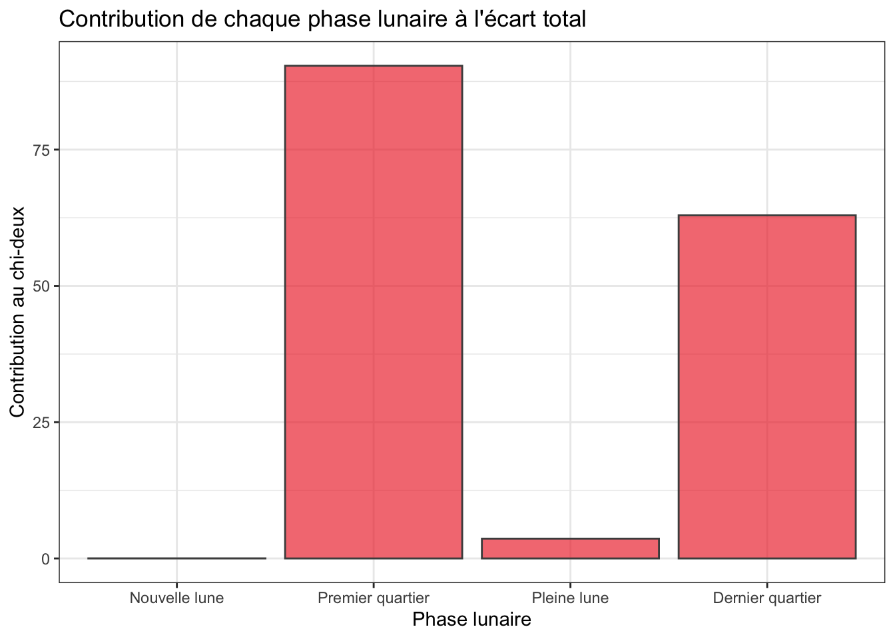
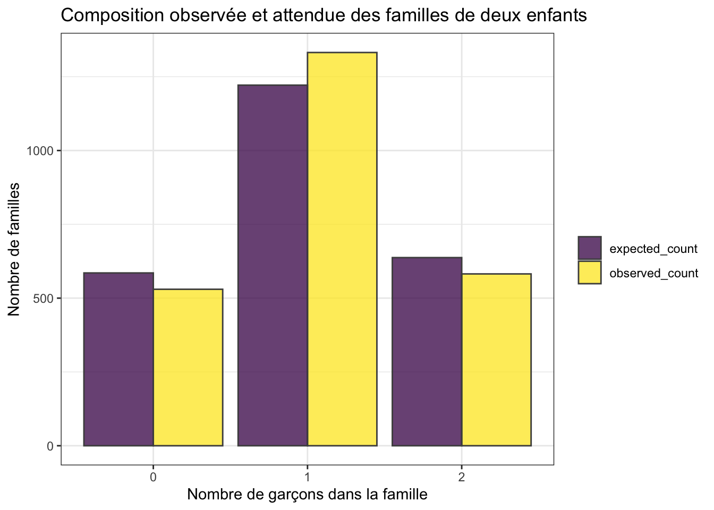
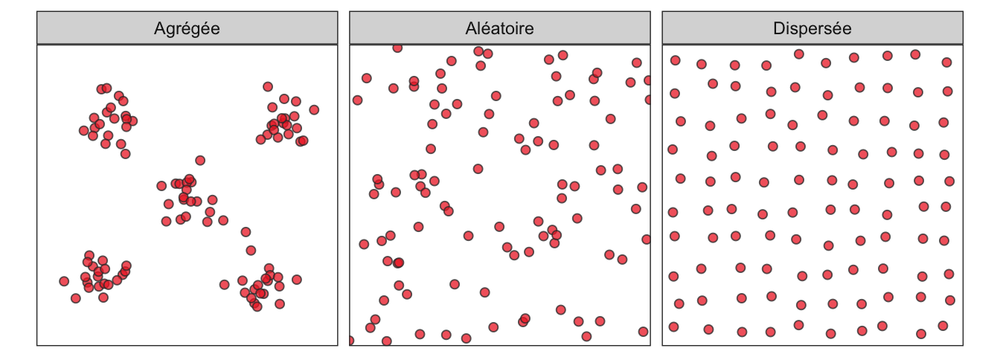
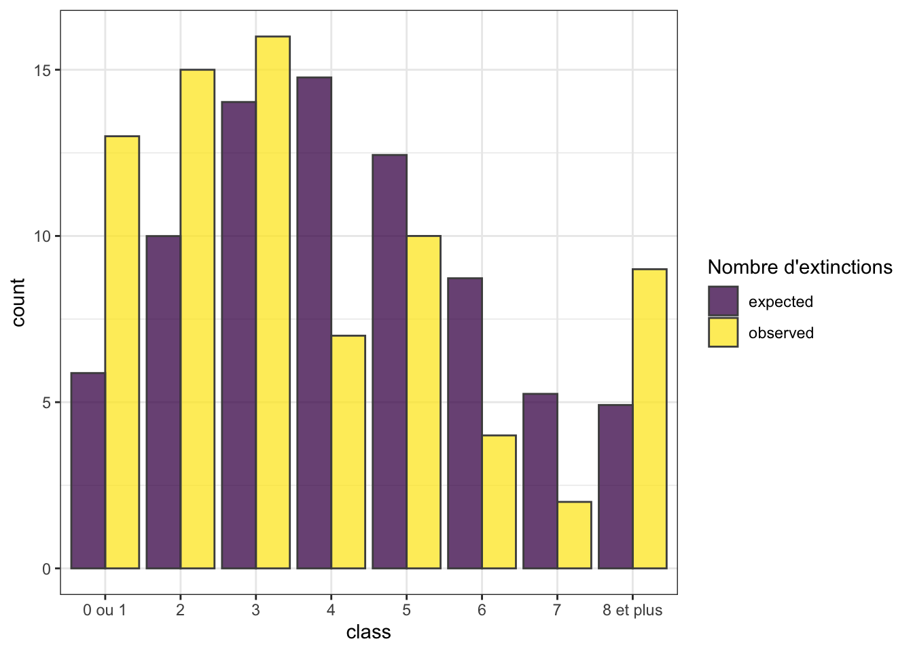

library(tidyverse)
library(skimr)
library(janitor)5.1 Pré-requis
Comme pour chaque nouveau chapitre, je vous conseille de travailler dans un nouveau script que vous placerez dans votre répertoire de travail, et dans une nouvelle session de travail (Menu Session > Restart R). Inutile en revanche de créer un nouveau Rproject : vous pouvez tout à fait avoir plusieurs scripts dans le même répertoire de travail et pour un même Rproject. Comme toujours, consultez les sections du livre du semestre 3 consacrées aux scripts et aux projets si vous ne savez plus comment faire.
Si vous êtes dans une nouvelle session de travail (ou que vous avez quitté puis relancé RStudio), vous devrez penser à recharger en mémoire les packages utiles. Dans ce chapitre, vous aurez besoin d’utiliser :
- le
tidyverse(Wickham 2023), qui comprend notammentreadr(Wickham, Hester, et Bryan 2026),dplyr(Wickham, François, et al. 2026),tidyr(Wickham, Vaughan, et Girlich 2025) etggplot2(Wickham, Chang, et al. 2026) ; skimr(Waring et al. 2026), qui permet de calculer des résumés de données très informatifs ;janitor(Firke 2024), pour nettoyer facilement les noms de variables d’un tableau.
Vous aurez également besoin des jeux de données suivants que vous pouvez dès maintenant télécharger dans votre répertoire de travail :
Enfin, je spécifie ici une fois pour toutes le thème que j’utiliserai pour tous les graphiques de ce chapitre. Libre à vous de choisir un thème différent ou de vous contenter du thème proposé par défaut :
theme_set(theme_bw())5.2 Contexte
Dans le chapitre précédent, nous avons comparé des proportions. Dans le cas le plus simple, la variable étudiée ne possède que deux modalités : succès / échec, femelle / mâle, vivant / mort, présent / absent, etc. Le test binomial permet alors de comparer une proportion observée à une valeur théorique, et prop.test() permet de comparer deux proportions.
Mais de nombreuses questions ne se résument pas à deux catégories. On peut vouloir savoir si :
- les observations sont réparties de façon équilibrée entre plusieurs catégories ;
- une distribution observée correspond à une distribution théorique connue (par exemple une loi de Poisson ou une loi binomiale) ;
- les écarts entre effectifs observés et effectifs attendus sont compatibles avec la fluctuation d’échantillonnage ou si des associations préférentielles existent entre certaines modalités de deux variables qualitatives.
Dans ce chapitre, nous allons donc passer d’une proportion isolée à une distribution de fréquences entière.
L’idée générale reste pourtant très proche de celle du chapitre précédent. Il faut toujours comparer ce que l’on observe à ce que l’on aurait attendu si l’hypothèse nulle était vraie. La différence, c’est que cette comparaison ne porte plus sur une seule proportion, mais sur plusieurs effectifs simultanément.
À retenir !
Un test de qualité de l’ajustement compare une distribution observée d’effectifs à une distribution attendue sous un modèle théorique.
Le raisonnement est toujours le même :
- définir clairement le modèle attendu sous H\(_0\) ;
- calculer les effectifs attendus ;
- mesurer l’écart entre observé et attendu ;
- décider si cet écart est compatible avec les fluctuations d’échantillonnage.
5.3 Contexte scientifique et données
Nous allons commencer avec un exemple issu d’une étude sur la reproduction d’un poisson récifal, le labre à six bandes, ou Girelle paon de Hardwicke (Thalassoma hardwicke), dans le lagon de Moorea en Polynésie française. Chez de nombreux organismes marins, les rythmes lunaires peuvent influencer la reproduction, le développement larvaire, le recrutement et les interactions avec les prédateurs. La lumière nocturne associée aux différentes phases de la lune peut par exemple modifier les conditions rencontrées par les larves dans la colonne d’eau.
Dans une étude consacrée à la phénologie reproductive de ce poisson récifal, Shima et al. (2020b) ont montré que la reproduction n’était pas répartie au hasard au cours du cycle lunaire. Les données brutes associées à cette étude sont disponibles sur Dryad (Shima et al. 2020a). Elles contiennent de nombreuses variables décrivant la croissance journalière des otolithes, les dates de fertilisation estimées, les dates de recrutement, la durée de vie larvaire, les sites de collecte et plusieurs variables lunaires.
Le fichier brut contient plus de 40 000 lignes, car chaque ligne correspond à un incrément de croissance d’un otolithe. Pour ce chapitre, nous n’avons pas besoin d’un tel niveau de détail. Nous allons donc utiliser deux fichiers simplifiés :
poissons_recifaux_lune.csv, qui contient une ligne par poisson ;calendrier_lunaire_recifal.csv, qui décrit les jours lunaires disponibles pendant la fenêtre temporelle étudiée.
Avant d’importer les données, nous allons définir l’ordre dans lequel nous voulons afficher les phases lunaires. Dans les fichiers .csv, les phases sont codées avec des noms courts, sans accents et avec des tirets bas. C’est pratique pour les noms de variables, mais moins lisible dans un tableau ou sur un graphique.
On crée donc deux petits vecteurs :
phase_levels, qui spécifie l’ordre dans lequel on veut ordonner les modalités dans les données (pour les graphiques notamment) ;phase_labels, qui spécifie la façon dont les noms seront affichés dans les sorties.
# Ordre chronologique des phases lunaires
# On reprend exactement les mêmes noms que dans le fichier CSV
# pour que R comprenne qu'il s'agit des mêmes modalités
phase_levels <- c(
"nouvelle_lune",
"premier_quartier",
"pleine_lune",
"dernier_quartier"
)
# Noms affichés dans les tableaux et les graphiques
phase_labels <- c(
"Nouvelle lune",
"Premier quartier",
"Pleine lune",
"Dernier quartier"
)On peut maintenant importer le fichier contenant les données des poissons récifaux. Au passage, on transforme birth_lunar_phase en facteur ordonné selon les niveaux définis ci-dessus. On transforme aussi stage en facteur, car il s’agit d’une variable qualitative.
reef_fish <- read_csv(
"data/poissons_recifaux_lune.csv"
) |>
mutate(
birth_lunar_phase = factor(
birth_lunar_phase,
levels = phase_levels,
labels = phase_labels
),
stage = factor(stage)
)
reef_fish# A tibble: 701 × 11
fish_id stage site reef birth_date pelagic_larval_durat…¹ birth_lunar_day
<dbl> <fct> <chr> <dbl> <date> <dbl> <dbl>
1 19 settler VME 76 2016-12-16 46 17
2 20 settler VME 76 2016-12-07 48 8
3 21 settler VME 76 2016-12-08 47 9
4 23 settler VOW NA 2016-12-19 46 20
5 27 settler VOE NA 2016-12-19 47 20
6 28 settler VOE NA 2016-12-14 42 15
7 30 settler VME NA 2016-12-10 47 11
8 33 settler VMW NA 2016-12-15 45 16
9 37 settler VMW NA 2016-12-15 47 16
10 39 settler VOW NA 2016-12-14 49 15
# ℹ 691 more rows
# ℹ abbreviated name: ¹pelagic_larval_duration
# ℹ 4 more variables: birth_lunar_month <dbl>, birth_lunar_phase <fct>,
# birth_moon_first_half <dbl>, birth_moon_second_half <dbl>Ce premier tableau contient une ligne par poisson. Les variables principales sont :
fish_id: identifiant du poisson ;stage: étape du cycle de vie du poisson au moment de sa collecte ;siteetreef: informations sur le site de collecte ;birth_date: date de fertilisation estimée ;pelagic_larval_duration: durée de vie larvaire pélagique ;birth_lunar_day: jour lunaire correspondant à la date de fertilisation estimée ;birth_lunar_month: cycle lunaire correspondant à la date de fertilisation estimée ;birth_lunar_phase: phase lunaire correspondant à la date de fertilisation estimée.
Dans ce jeu de données, l’unité statistique est donc le poisson : chaque ligne correspond à un individu échantillonné. Pour chaque poisson, les auteurs ont estimé une date de fertilisation à partir de l’âge larvaire reconstruit grâce aux otolithes. Cette date n’a donc pas été observée directement sur le terrain : elle est déduite a posteriori à partir de la croissance de l’individu.
Dans la suite du chapitre, nous ne compterons donc pas directement des fertilisations observées dans la nature. Nous compterons des poissons, en les classant selon la phase lunaire correspondant à leur date de fertilisation estimée. Dire qu’il y a 320 poissons dans la phase “premier quartier” signifie donc que 320 poissons du jeu de données ont une date de fertilisation estimée située pendant le premier quartier.
Par simplicité, on pourra parfois parler de “dates de fertilisation estimées”, mais il faut garder en tête que les effectifs analysés sont des effectifs de poissons classés selon leur date de fertilisation estimée.
On importe ensuite le calendrier lunaire correspondant à la fenêtre temporelle étudiée. On applique le même recodage à lunar_phase, afin que les phases lunaires aient le même ordre et les mêmes noms dans les deux tableaux.
moon_calendar <- read_csv(
"data/calendrier_lunaire_recifal.csv"
) |>
mutate(
lunar_phase = factor(
lunar_phase,
levels = phase_levels,
labels = phase_labels
)
)
moon_calendar# A tibble: 163 × 4
date lunar_day lunar_month lunar_phase
<date> <dbl> <dbl> <fct>
1 2016-11-10 11 1161 Premier quartier
2 2016-11-11 12 1161 Premier quartier
3 2016-11-12 13 1161 Premier quartier
4 2016-11-13 14 1161 Premier quartier
5 2016-11-14 15 1161 Pleine lune
6 2016-11-15 16 1161 Pleine lune
7 2016-11-16 17 1161 Pleine lune
8 2016-11-17 18 1161 Pleine lune
9 2016-11-18 19 1161 Pleine lune
10 2016-11-19 20 1161 Pleine lune
# ℹ 153 more rowsCe second tableau contient une ligne par jour lunaire disponible dans la période étudiée. Ses variables sont :
date: date calendaire ;lunar_day: jour dans le cycle lunaire ;lunar_month: numéro de lunaison ;lunar_phase: phase lunaire correspondant à cette date.
La variable lunar_month correspond au numéro de lunaison selon la numérotation astronomique de Brown (Brown Lunation Number). Dans ce système, la lunaison 1 commence avec la première nouvelle lune de 1923. Les valeurs 1161, 1162, etc. ne sont donc pas des mois calendaires classiques, mais des identifiants de cycles lunaires successifs. La variable lunar_day, elle, indique le jour au sein de ce cycle lunaire.
Ce calendrier nous permettra de calculer les proportions attendues dans chaque phase lunaire. Autrement dit, nous allons comparer les phases lunaires associées aux dates de fertilisation estimées des poissons aux phases lunaires qui étaient disponibles pendant la période étudiée.
5.4 Le modèle proportionnel
Le modèle de probabilité le plus simple est le modèle proportionnel. Dans ce modèle, la fréquence attendue d’un événement est proportionnelle au nombre d’occasions qu’il avait de se produire. Par exemple, si on dispose de deux catégories, et que la première est disponible deux fois plus souvent que l’autre, on s’attend à ce que l’événement d’intérêt se produise deux fois plus souvent dans la première catégorie que dans la seconde, si cet évènement se produit effectivement au hasard.
Dans notre exemple, on veut savoir si les dates de fertilisation estimées des poissons sont réparties au hasard au cours du temps, au fil des cycles lunaires, ou si certaines phases lunaires sont au contraire associées à davantage de poissons. Si la phase lunaire n’intervenait pas dans le processus, on pourrait d’abord penser que 25 % des poissons devraient avoir une date de fertilisation estimée pendant la nouvelle lune, 25 % pendant le premier quartier, 25 % pendant la pleine lune et 25 % pendant le dernier quartier. Puisqu’il y a quatre phases lunaires distinctes, il semble donc logique d’attendre un quart des poissons dans chaque phase si le cycle lunaire ne joue aucun rôle dans ce phénomène biologique. Malheureusement, ce raisonnement simple est erroné : dans la fenêtre temporelle couverte par l’étude, les quatre phases lunaires ne représentent pas exactement le même nombre de jours. Certaines phases sont disponibles un peu plus longtemps que d’autres. Si une phase lunaire dure plus longtemps dans la période étudiée, elle offre mécaniquement plus d’occasions d’observer un poisson dont la date de fertilisation estimée tombe dans cette phase. Sous l’hypothèse nulle, les dates de fertilisation estimées sont indépendantes du cycle lunaire. Cela ne signifie donc pas que l’on attend exactement le même nombre de poissons dans chaque phase (un quart). Cela signifie plutôt que le nombre attendu de poissons doit être proportionnel au nombre de jours disponibles dans chaque phase lunaire.
Autrement dit, si les dates de fertilisation estimées sont indépendantes du cycle lunaire, une phase lunaire qui représente 30 % des jours disponibles devrait contenir environ 30 % des poissons. Une phase qui représente 20 % des jours disponibles devrait contenir environ 20 % des poissons. C’est ce modèle proportionnel que nous allons tester.
Attention, cette hypothèse est volontairement simple (c’est presque toujours le cas pour les hypothèses nulles). Elle ne tient pas compte des mécanismes biologiques fins, ni du comportement des adultes, ni des différences de survie larvaire entre phases lunaires. Elle nous servira ici de modèle nul.
Modèle proportionnel
Dans un modèle proportionnel, les effectifs attendus ne sont pas nécessairement identiques dans toutes les catégories. Ils sont proportionnels au nombre d’occasions disponibles dans chaque catégorie.
Les hypothèses testées sont donc les suivantes :
- H\(_0\) : les dates de fertilisation estimées sont indépendantes des phases lunaires. Leur répartition est proportionnelle au nombre de jours disponibles dans chaque phase.
- H\(_1\) : les dates de fertilisation estimées ne sont pas indépendantes des phases lunaires. Leur répartition n’est pas proportionnelle au nombre de jours disponibles dans chaque phase.
Pour tester cette hypothèse, il faut comparer deux grandeurs : les effectifs observés et les effectifs attendus dans chaque phase lunaire.
- Les effectifs observés correspondent simplement au nombre de poissons dont la date de fertilisation estimée tombe dans chaque phase lunaire.
- Les effectifs attendus correspondent au nombre de poissons que l’on aurait dû obtenir dans chaque phase, si les dates de fertilisation estimées étaient indépendantes du cycle lunaire. Dans ce cas, les poissons devraient se répartir proportionnellement au nombre de jours disponibles dans chaque phase lunaire.
5.5 Exploration statistique des données
L’exploration statistique des données est ici très simple. La seule variable d’intérêt est birth_lunar_phase, qui indique la phase lunaire correspondant à la date de fertilisation estimée de chaque individu. On peut commencer par vérifier que cette variable ne contient pas de valeur manquante et que les modalités sont bien codées :
reef_fish |>
skim(birth_lunar_phase)| Name | reef_fish |
| Number of rows | 701 |
| Number of columns | 11 |
| _______________________ | |
| Column type frequency: | |
| factor | 1 |
| ________________________ | |
| Group variables | None |
Variable type: factor
| skim_variable | n_missing | complete_rate | ordered | n_unique | top_counts |
|---|---|---|---|---|---|
| birth_lunar_phase | 0 | 1 | FALSE | 4 | Pre: 320, Ple: 155, Nou: 152, Der: 74 |
On compte ensuite le nombre de poissons observés dans chaque phase lunaire, et on calcule les proportions correspondantes :
lunar_counts <- reef_fish |>
count(birth_lunar_phase, name = "observed_count") |>
mutate(
observed_prop = observed_count / sum(observed_count),
)
lunar_counts# A tibble: 4 × 3
birth_lunar_phase observed_count observed_prop
<fct> <int> <dbl>
1 Nouvelle lune 152 0.217
2 Premier quartier 320 0.456
3 Pleine lune 155 0.221
4 Dernier quartier 74 0.106La colonne observed_count indique l’effectif observé dans chaque phase lunaire. La colonne observed_prop indique la proportion observée de poissons dans chaque phase. À ce stade, on décrit uniquement les données : on constate clairement des déséquilibres entre les phases. Les poissons dont la date de fertilisation estimée tombe pendant le premier quartier semblent environ deux fois plus nombreux que ceux dont la date de fertilisation estimée tombe pendant la nouvelle lune ou la pleine lune. À l’inverse, les poissons dont la date de fertilisation estimée tombe pendant le dernier quartier semblent deux fois moins nombreux que ceux dont la date de fertilisation estimée tombe pendant la nouvelle lune ou la pleine lune. On ne sait pas encore si ces écarts entre phases lunaires sont plus importants que ce que l’on pourrait obtenir par hasard. C’est le test statistique de qualité de l’ajustement qui nous permettra de le vérifier.
Pour construire le modèle attendu sous H\(_0\), il faut maintenant regarder le calendrier lunaire. Si les dates de fertilisation estimées étaient indépendantes du cycle lunaire, les poissons devraient se répartir proportionnellement au nombre de jours disponibles dans chaque phase.
On compte donc le nombre de jours disponibles dans chaque phase lunaire, et on calcule les proportions correspondantes :
phase_opportunities <- moon_calendar |>
count(lunar_phase, name = "n_days") |>
mutate(
expected_prop = n_days / sum(n_days)
)
phase_opportunities# A tibble: 4 × 3
lunar_phase n_days expected_prop
<fct> <int> <dbl>
1 Nouvelle lune 35 0.215
2 Premier quartier 44 0.270
3 Pleine lune 42 0.258
4 Dernier quartier 42 0.258La colonne n_days indique le nombre de jours disponibles dans chaque phase lunaire pendant la fenêtre temporelle étudiée. La colonne expected_prop indique la proportion de jours correspondant à chaque phase lunaire.
Sous H\(_0\), ces proportions de jours deviennent les proportions attendues de poissons. Par exemple, si une phase lunaire représente 25 % des jours disponibles, on attend environ 25 % des poissons dans cette phase.
Il reste alors à transformer ces proportions attendues en effectifs attendus. La formule est simple :
\[\textrm{Effectif attendu} = \textrm{Proportion attendue} \times \textrm{Effectif total}\]
On peut donc calculer les effectifs attendus de la façon suivante :
lunar_expected <- phase_opportunities |>
mutate(
expected_count = expected_prop * nrow(reef_fish)
)
lunar_expected# A tibble: 4 × 4
lunar_phase n_days expected_prop expected_count
<fct> <int> <dbl> <dbl>
1 Nouvelle lune 35 0.215 151.
2 Premier quartier 44 0.270 189.
3 Pleine lune 42 0.258 181.
4 Dernier quartier 42 0.258 181.La colonne expected_count indique le nombre de poissons que l’on devrait observer dans chaque phase lunaire si l’hypothèse nulle était vraie. Ces valeurs ne sont pas nécessairement des nombres entiers, car il s’agit d’effectifs théoriques calculés à partir de proportions.
Nous pouvons maintenant réunir les effectifs observés et les effectifs attendus dans un même tableau descriptif :
lunar_summary <- lunar_counts |>
left_join(
lunar_expected,
by = c("birth_lunar_phase" = "lunar_phase")
)
lunar_summary# A tibble: 4 × 6
birth_lunar_phase observed_count observed_prop n_days expected_prop
<fct> <int> <dbl> <int> <dbl>
1 Nouvelle lune 152 0.217 35 0.215
2 Premier quartier 320 0.456 44 0.270
3 Pleine lune 155 0.221 42 0.258
4 Dernier quartier 74 0.106 42 0.258
# ℹ 1 more variable: expected_count <dbl>Ici, la jointure n’est pas absolument indispensable : on aurait pu utiliser bind_cols() pour coller les deux tableaux. Mais la jointure est plus sûre, car elle fonctionnera même si les lignes ne sont pas ordonnées de la même manière dans les deux tableaux. Elle permet en outre de vérifier que les modalités des phases lunaires sont bien strictement identiques dans les deux tableaux.
lunar_summary rassemble les grandeurs nécessaires pour comprendre la comparaison qui sera faite par le test. On y trouve, pour chaque phase lunaire, le nombre de poissons observés, la proportion observée, le nombre de jours disponibles, la proportion attendue et l’effectif attendu.
5.6 Exploration graphique
Avant de réaliser le test, il est toujours utile de représenter les effectifs observés et attendus. Cela permet de voir si certaines catégories semblent très différentes du modèle attendu sous H\(_0\). Pour chaque phase lunaire, on commence donc par rassembler les effectifs observés et attendus dans une même colonne d’un tableau long :
lunar_long <- lunar_summary |>
select(birth_lunar_phase, observed_count, expected_count) |>
pivot_longer(
cols = c(observed_count, expected_count),
names_to = "type",
values_to = "count"
)
lunar_long# A tibble: 8 × 3
birth_lunar_phase type count
<fct> <chr> <dbl>
1 Nouvelle lune observed_count 152
2 Nouvelle lune expected_count 151.
3 Premier quartier observed_count 320
4 Premier quartier expected_count 189.
5 Pleine lune observed_count 155
6 Pleine lune expected_count 181.
7 Dernier quartier observed_count 74
8 Dernier quartier expected_count 181.On représente ensuite ces effectifs sur un diagramme bâtons avec geom_col():
lunar_long |>
ggplot(aes(x = birth_lunar_phase, y = count, fill = type)) +
geom_col(position = "dodge", alpha = 0.75, color = "grey30") +
labs(
x = "Phase lunaire",
y = "Effectif",
fill = "",
title = "Dates de fertilisation observées et attendues"
) +
scale_fill_viridis_d()
On voit que les poissons ne semblent pas répartis entre les phases lunaires de façon proportionnelle au nombre de jours disponibles dans chaque phase, lorsque l’on considère leur date de fertilisation estimée. Si les écarts semblent faibles entre effectifs observés et attendus pour la nouvelle lune et la pleine lune, le premier quartier est beaucoup plus représenté qu’attendu, alors que le dernier quartier est beaucoup moins représenté. Le graphique ne constitue pas un test. Il permet simplement de décrire la structure des écarts entre les données observées et le modèle attendu. Si jamais le test statistique conclut que les écarts constatés ne sont pas compatibles avec les fluctuations d’échantillonnage, ce graphique permettra de discuter précisément quels écarts sont les plus importants et dans quel sens. Le test statistique ne dira en effet qu’une seule chose : si les données sont compatibles ou non avec le modèle proportionnel. Si le test rejette l’hypothèse nulle, il faudra ensuite examiner la nature des écarts constatés pour comprendre quels mécanismes biologiques peuvent expliquer ces écarts.
5.7 Le test du chi-deux de qualité de l’ajustement
Le test du \(\chi^2\) de qualité de l’ajustement compare des effectifs observés à des effectifs attendus sous l’hypothèse nulle.
La statistique de test est :
\[\chi^2 = \sum_i \frac{(\textrm{Observé}_i - \textrm{Attendu}_i)^2}{\textrm{Attendu}_i}\]
Dans cette formule :
- \(i\) désigne les différentes catégories ;
- \(\textrm{Observé}_i\) est l’effectif observé dans la catégorie \(i\) ;
- \(\textrm{Attendu}_i\) est l’effectif attendu dans cette même catégorie sous H\(_0\).
Ici, les catégories sont les quatre phases lunaires. Le test calcule donc un écart standardisé pour chaque phase lunaire, puis additionne ces écarts pour obtenir une statistique globale.
On peut calculer explicitement ces écarts dans un tableau. On le fait ici uniquement pour mieux comprendre le test. Dans la pratique, la fonction chisq.test() calcule directement la statistique et la p-value :
lunar_fit <- lunar_summary |>
mutate(
difference = observed_count - expected_count,
relative_difference = difference / expected_count,
contribution = (observed_count - expected_count)^2 / expected_count,
contribution_prop = contribution / sum(contribution)
) |>
relocate(
difference,
relative_difference,
contribution,
contribution_prop,
.after = birth_lunar_phase
)
lunar_fit# A tibble: 4 × 10
birth_lunar_phase difference relative_difference contribution
<fct> <dbl> <dbl> <dbl>
1 Nouvelle lune 1.48 0.00982 0.0145
2 Premier quartier 131. 0.691 90.4
3 Pleine lune -25.6 -0.142 3.64
4 Dernier quartier -107. -0.590 62.9
# ℹ 6 more variables: contribution_prop <dbl>, observed_count <int>,
# observed_prop <dbl>, n_days <int>, expected_prop <dbl>,
# expected_count <dbl>La colonne difference indique l’écart brut entre l’effectif observé et l’effectif attendu. Une valeur positive indique qu’il y a plus de poissons observés qu’attendus dans cette phase lunaire ; une valeur négative indique qu’il y en a moins qu’attendu.
La colonne relative_difference exprime le même écart relativement à l’effectif attendu. Elle permet de comparer plus facilement des catégories qui n’ont pas exactement les mêmes effectifs attendus. Enfin, la colonne contribution indique la contribution de chaque phase lunaire à la statistique du \(\chi^2\), et contribution_prop indique la proportion de l’écart total expliquée par chaque phase. Plus cette contribution est grande, plus la phase lunaire concernée participe à l’écart global entre les données observées et le modèle attendu.
On peut maintenant représenter ces contributions :
lunar_fit |>
ggplot(aes(x = birth_lunar_phase, y = contribution)) +
geom_col(fill = "firebrick2", alpha = 0.65, color = "grey30") +
labs(
x = "Phase lunaire",
y = "Contribution au chi-deux",
title = "Contribution de chaque phase lunaire à l'écart total"
)
Plus la valeur de \(\chi^2\) est grande, plus l’écart entre les effectifs observés et attendus est important. La p-value indique ensuite si un écart au moins aussi grand serait plausible si l’hypothèse nulle était vraie.
Dans R, le test se réalise avec la fonction chisq.test(). Comme le package janitor possède également une fonction nommée chisq.test(), nous allons appeler explicitement la fonction du package stats, qui est chargé automatiquement avec R :
test_lunar <- stats::chisq.test(
x = lunar_summary$observed_count,
p = lunar_summary$expected_prop
)
test_lunar
Chi-squared test for given probabilities
data: lunar_summary$observed_count
X-squared = 156.97, df = 3, p-value < 2.2e-16Ici, la p-value est très petite. On rejette donc l’hypothèse nulle : les dates de fertilisation estimées ne sont pas compatibles avec une répartition simplement proportionnelle au nombre de jours de chaque phase lunaire.
Cela ne signifie pas que la lune “détermine” à elle seule la reproduction. C’est une conclusion importante. Le test nous dit seulement que le modèle nul proposé ne décrit pas correctement les effectifs observés. L’écart peut venir de la phénologie reproductive des adultes, de la survie différentielle des larves, des conditions de recrutement, ou de plusieurs de ces mécanismes à la fois.
5.8 Degrés de liberté et p-value
Dans les résultats du test ci-dessus, on note que le nombre de degrés de liberté est égal à 3 (df = 3). Pour un test du \(\chi^2\) de qualité de l’ajustement, le nombre de degrés de liberté ne doit pas être accepté sans réfléchir. Il doit être vérifié et se calcule de la façon suivante :
\[df = k - 1 - m\]
où \(k\) est le nombre de catégories et \(m\) le nombre de paramètres estimés à partir des données pour construire les effectifs attendus.
Dans notre exemple, les proportions attendues, sous l’hypothèse nulle d’un modèle proportionnel, sont déterminées par le calendrier lunaire et par la durée de la fenêtre d’étude. Elles ne sont pas estimées à partir des effectifs observés de poissons. On a donc \(k = 4\) phases lunaires et \(m = 0\) paramètre estimé à partir des effectifs observés, soit un nombre de degrés de liberté égal à :
4 - 1 - 0[1] 3Puisque le nombre de degrés de liberté utilisé par chisq.test() correspond bien au nombre de degrés de liberté correct, la p-value du test est correcte également, et nos conclusions sont valides. Si en revanche le bon nombre de degrés de liberté n’avait pas été utilisé par chisq.test(), il aurait fallu recalculer la p-value manuellement. Nous aurons l’occasion de voir comment faire plus loin.
Attention
Un test de qualité de l’ajustement teste toujours l’ajustement de données observées à un modèle précis.
Si le modèle nul est mal choisi, la p-value peut être très petite sans que l’interprétation biologique soit claire.
5.9 Conditions d’application
Le test du \(\chi^2\) repose sur une approximation. Pour que cette approximation soit correcte, les effectifs attendus ne doivent pas être trop faibles. Les règles usuelles sont les suivantes :
- aucun effectif attendu ne devrait être inférieur à 1 ;
- pas plus de 20 % des effectifs attendus ne devraient être inférieurs à 5.
Dans notre exemple, on peut examiner les effectifs attendus directement :
lunar_fit |>
select(birth_lunar_phase, expected_count)# A tibble: 4 × 2
birth_lunar_phase expected_count
<fct> <dbl>
1 Nouvelle lune 151.
2 Premier quartier 189.
3 Pleine lune 181.
4 Dernier quartier 181.Ici, tous les effectifs attendus sont largement supérieurs à 5. Les conditions d’application du test sont donc satisfaites.
Si ce n’était pas le cas, le test ne pourrait pas être réalisé immédiatement. Il faudrait essayer de regrouper des catégories voisines, à condition que ce regroupement ait un sens biologique.
5.10 Magnitude de l’effet
Comme toujours, la p-value ne mesure pas la taille de l’effet : elle indique seulement si les données observées sont compatibles avec l’hypothèse nulle, pas si l’écart observé est biologiquement important.
Pour évaluer la magnitude de l’écart, il faut revenir aux catégories elles-mêmes. Ici, trois informations sont particulièrement utiles :
- les différences entre effectifs observés et attendus ;
- les différences relatives entre effectifs observés et attendus ;
- les contributions de chaque catégorie au \(\chi^2\).
On peut extraire les colonnes les plus utiles du tableau lunar_fit :
lunar_fit |>
select(
birth_lunar_phase,
observed_count,
expected_count,
difference,
relative_difference,
contribution_prop
)# A tibble: 4 × 6
birth_lunar_phase observed_count expected_count difference relative_difference
<fct> <int> <dbl> <dbl> <dbl>
1 Nouvelle lune 152 151. 1.48 0.00982
2 Premier quartier 320 189. 131. 0.691
3 Pleine lune 155 181. -25.6 -0.142
4 Dernier quartier 74 181. -107. -0.590
# ℹ 1 more variable: contribution_prop <dbl>L’écart au modèle proportionnel n’est pas réparti de façon homogène entre les phases lunaires. Le premier quartier présente un excès net de poissons par rapport à l’effectif attendu : davantage de poissons que prévu ont une date de fertilisation estimée pendant cette phase. À l’inverse, le dernier quartier présente un déficit net : moins de poissons que prévu ont une date de fertilisation estimée pendant cette phase.
Les écarts observés pour la nouvelle lune et la pleine lune sont plus faibles. Ils participent donc beaucoup moins à l’écart global mesuré par le test du \(\chi^2\). L’effet détecté par le test correspond donc surtout à une surreprésentation du premier quartier et à une sous-représentation du dernier quartier, plutôt qu’à un décalage uniforme de toutes les phases lunaires.
5.11 Le cas de deux catégories
Le test du \(\chi^2\) de qualité de l’ajustement fonctionne aussi avec seulement deux catégories. Dans ce cas, il devient très proche du test binomial vu au chapitre précédent.
Reprenons l’exemple précédent, mais posons une question binaire : la proportion de poissons dont la date de fertilisation estimée tombe pendant le premier quartier est-elle compatible avec la proportion de jours de premier quartier dans la période étudiée ?
- H\(_0\) : la proportion de poissons dont la date de fertilisation estimée tombe pendant le premier quartier est égale à la proportion de jours de premier quartier dans la période étudiée.
- H\(_1\) : la proportion de poissons dont la date de fertilisation estimée tombe pendant le premier quartier est différente de cette proportion attendue.
Commençons par transformer la question en deux catégories :
# Calcul de la proportion attendue de fertilisation pendant le premier quartier
expected_prop_first_quarter <- phase_opportunities |>
filter(lunar_phase == "Premier quartier") |>
pull(expected_prop)
expected_prop_first_quarter[1] 0.2699387# Tableau synthétique
first_quarter_fit <- reef_fish |>
mutate(
birth = if_else(
birth_lunar_phase == "Premier quartier",
"Premier quartier",
"Autres phases"
)
) |>
count(birth, name = "observed") |>
mutate(
expected_prop = if_else(
birth == "Premier quartier",
expected_prop_first_quarter,
1 - expected_prop_first_quarter
)
)
first_quarter_fit# A tibble: 2 × 3
birth observed expected_prop
<chr> <int> <dbl>
1 Autres phases 381 0.730
2 Premier quartier 320 0.270Le test du \(\chi^2\) de qualité de l’ajustement s’écrit :
stats::chisq.test(
x = first_quarter_fit$observed,
p = first_quarter_fit$expected_prop
)
Chi-squared test for given probabilities
data: first_quarter_fit$observed
X-squared = 123.79, df = 1, p-value < 2.2e-16On peut comparer ce résultat à celui du test binomial exact :
stats::binom.test(
x = 320,
n = 701, # 381 + 320
p = expected_prop_first_quarter
)
Exact binomial test
data: 320 and 701
number of successes = 320, number of trials = 701, p-value < 2.2e-16
alternative hypothesis: true probability of success is not equal to 0.2699387
95 percent confidence interval:
0.4191546 0.4941945
sample estimates:
probability of success
0.4564907 Les deux tests conduisent ici à la même conclusion : la proportion de poissons dont la date de fertilisation estimée tombe pendant le premier quartier est nettement supérieure à la proportion attendue si les dates de fertilisation estimées étaient indépendantes du cycle lunaire.
La proportion observée est donc d’environ 45.6 %, avec une proportion réelle dans la population générale probablement comprise entre 41.9% et 49.4% (comme l’indique l’intervalle de confiance à 95% de cette proportion), alors que la proportion attendue de jours de premier quartier est d’environ 27 %. L’intérêt principal du test binomial est qu’il fournit directement un intervalle de confiance sur la proportion observée.
À retenir !
Avec seulement deux catégories, le test du \(\chi^2\) de qualité de l’ajustement et le test binomial répondent à une question très proche.
En pratique, si la question porte sur une proportion unique et que vous disposez d’un ordinateur, binom.test() reste souvent préférable : il fournit un test exact et un intervalle de confiance directement interprétable. En revanche, si plus de 2 catégories vous intéressent, le test de \(\chi^2\) de qualité de l’ajustement est le seul possible.
5.12 Ajustement à une loi binomiale
Le modèle proportionnel que nous venons d’utiliser permettait de comparer des effectifs observés à des effectifs attendus proportionnels au nombre d’occasions disponibles dans chaque catégorie. Il s’agissait seulement d’un cas particulier d’utilisation du test de qualité de l’ajustement. Ce type de test permet en effet de comparer une distribution observée à n’importe quelle loi de probabilité. Nous en verrons deux dans les sections suivantes : la loi binomiale et la loi de Poisson.
Commençons par la loi binomiale. L’exemple utilisé ici porte sur la composition de familles de deux enfants, à partir de données présentées par Rodgers et Doughty (2001). Dans cette étude, les chercheurs se sont intéressés au nombre de garçons dans les familles de deux enfants. Au total, 2444 familles ont été intégrées à l’étude. Pour chaque famille, on connaît le nombre de garçons parmi les deux enfants.
# Création du jeu de données
two_child_families <- tibble(
n_boys = 0:2,
observed_count = c(530, 1332, 582)
)
two_child_families# A tibble: 3 × 2
n_boys observed_count
<int> <dbl>
1 0 530
2 1 1332
3 2 582L’unité statistique est ici la famille. La variable étudiée est n_boys, c’est-à-dire le nombre de garçons dans une famille de deux enfants. Cette variable peut prendre seulement trois valeurs :
0: aucun garçon, donc deux filles ;1: un garçon et une fille ;2: deux garçons.
À ce stade, il ne s’agit donc pas de tester une proportion unique, comme dans le chapitre précédent. On ne demande pas simplement si la proportion totale de garçons est égale à 0.5. On demande si la distribution complète du nombre de garçons par famille correspond à ce que prédit un modèle binomial.
La loi binomiale est adaptée ici parce que chaque famille de deux enfants peut être vue comme une série de deux essais :
- le nombre d’essais est fixé à l’avance : chaque famille contient exactement deux enfants ;
- chaque essai a deux issues possibles : garçon ou fille ;
- on s’intéresse au nombre de succès, ici le nombre de garçons ;
- sous le modèle binomial, la probabilité d’avoir un garçon est la même pour chaque enfant ;
- sous le modèle binomial, les issues sont indépendantes les unes des autres.
Si ces conditions sont respectées, le nombre de garçons dans une famille de deux enfants peut être décrit par une loi binomiale :
\[X \sim \mathcal{B}(n = 2, p)\]
où \(X\) est le nombre de garçons dans une famille de deux enfants, \(n\) est le nombre d’enfants par famille, et \(p\) est la probabilité qu’un enfant soit un garçon.
Les hypothèses testées sont donc les suivantes :
- H\(_0\) : le nombre de garçons dans les familles de deux enfants suit une loi binomiale.
- H\(_1\) : le nombre de garçons dans les familles de deux enfants ne suit pas une loi binomiale.
Pour calculer les effectifs attendus, il faut connaître les probabilités attendues pour les trois catégories : 0 garçon, 1 garçon et 2 garçons. Ces probabilités sont données par la loi binomiale.
Il reste toutefois un point important : la valeur de \(p\) n’est pas donnée dans l’hypothèse nulle. On pourrait penser que \(p\) vaut 0.5, car on suppose que la probabilité qu’un enfant soit un garçon est égale à celle qu’il soit une fille. Toutefois, dans les populations animales, le sex-ratio (le rapport entre le nombre de mâles et le nombre de femelles dans la population) peut varier fortement selon les espèces. Rien ne nous garantit donc que \(p = 0.5\) chez les humains. Nous devons donc estimer, à partir des données observées dans cette étude, la proportion \(p\) qu’un enfant choisi au hasard dans la population soit un garçon. Pour cela, on calcule la proportion totale de garçons dans l’ensemble des familles :
n_boys_observed <- 530 * 0 + 1332 * 1 + 582 * 2
n_children <- 2 * (530 + 1332 + 582)
p_boy <- n_boys_observed / n_children
p_boy[1] 0.5106383La valeur de p_boy est la proportion observée de garçons parmi tous les enfants de l’échantillon. On l’utilise comme estimation de \(p\) dans la loi binomiale. Il est donc important de bien comprendre qu’ici, pour calculer les effectifs attendus, nous n’utilisons pas une valeur théorique de \(p\) (comme 0.5), mais une valeur estimée à partir des données observées. Cela signifie que nous avons estimé un paramètre à partir des données, ce qui aura un impact sur le calcul du nombre de degrés de liberté pour le test du \(\chi^2\) que nous réaliserons plus bas.
On peut maintenant calculer les probabilités attendues avec dbinom() :
two_child_fit <- two_child_families |>
mutate(
expected_prob = dbinom(
x = n_boys,
size = 2,
prob = p_boy
)
)
two_child_fit# A tibble: 3 × 3
n_boys observed_count expected_prob
<int> <dbl> <dbl>
1 0 530 0.239
2 1 1332 0.500
3 2 582 0.261La colonne expected_prob contient les probabilités attendues sous le modèle binomial. Par exemple, la probabilité attendue d’avoir exactement un garçon dans une famille de deux enfants est calculée par la loi binomiale avec size = 2 et prob = p_boy.
Pour obtenir les effectifs attendus, on multiplie ensuite ces probabilités par le nombre total de familles :
two_child_fit <- two_child_fit |>
mutate(
expected_count = sum(observed_count) * expected_prob
)
two_child_fit# A tibble: 3 × 4
n_boys observed_count expected_prob expected_count
<int> <dbl> <dbl> <dbl>
1 0 530 0.239 585.
2 1 1332 0.500 1221.
3 2 582 0.261 637.Le tableau compare maintenant les effectifs observés et les effectifs attendus sous le modèle binomial. On peut représenter cette comparaison graphiquement :
two_child_fit |>
select(-expected_prob) |>
pivot_longer(
cols = c(observed_count, expected_count),
names_to = "type",
values_to = "count"
) |>
ggplot(aes(x = factor(n_boys), y = count, fill = type)) +
geom_col(position = "dodge", alpha = 0.75, color = "grey30") +
labs(
x = "Nombre de garçons dans la famille",
y = "Nombre de familles",
fill = "",
title = "Composition observée et attendue des familles de deux enfants"
) +
scale_fill_viridis_d()
Le graphique suggère que les familles ayant un garçon et une fille sont plus nombreuses qu’attendu sous le modèle binomial. À l’inverse, les familles ayant deux enfants du même sexe sont moins nombreuses qu’attendu.
On peut maintenant calculer les écarts et les contributions au \(\chi^2\) :
two_child_fit <- two_child_fit |>
mutate(
difference = observed_count - expected_count,
contribution = (observed_count - expected_count)^2 / expected_count
) |>
relocate(difference, contribution, .after = n_boys)
two_child_fit# A tibble: 3 × 6
n_boys difference contribution observed_count expected_prob expected_count
<int> <dbl> <dbl> <dbl> <dbl> <dbl>
1 0 -55.3 5.22 530 0.239 585.
2 1 111. 10.0 1332 0.500 1221.
3 2 -55.3 4.79 582 0.261 637.Le test du \(\chi^2\) de qualité de l’ajustement s’écrit alors :
test_two_child <- stats::chisq.test(
x = two_child_fit$observed_count,
p = two_child_fit$expected_prob
)
test_two_child
Chi-squared test for given probabilities
data: two_child_fit$observed_count
X-squared = 20.021, df = 2, p-value = 4.492e-05Puisque la p-value est très inférieure à 0.05, le test indique un écart net entre les effectifs observés et les effectifs attendus sous le modèle binomial. Toutefois, il faut ici faire attention au nombre de degrés de liberté. La fonction chisq.test() utilise trois catégories, et renvoie donc par défaut :
\[df = 3 - 1 = 2\]
Mais ce n’est pas le bon nombre de degrés de liberté, car nous avons estimé un paramètre à partir des données : la probabilité \(p\) d’avoir un garçon. Il faut donc retirer un degré de liberté supplémentaire :
\[df = k - 1 - m = 3 - 1 - 1 = 1\]
La p-value doit donc être recalculée avec ce nombre de degrés de liberté :
p_value_two_child <- stats::pchisq(
test_two_child$statistic,
df = 1,
lower.tail = FALSE
)
p_value_two_child X-squared
7.657994e-06 Ici, on utilise la fonction pchisq() du package stats, avec les arguments suivants : - test_two_child$statistic : c’est la valeur du \(\chi^2\), calculée automatiquement par la fonction chisq.test() comme la statistique de notre test. Contrairement au nombre de degrés de libertés, cette valeur n’est pas affectée par le fait que nous ayons estimé un paramètre à partir des données. La valeur du \(\chi^2\) renvoyée par le test est donc correcte et c’est celle que nous utilisons ici ; - df = 1 : le nombre de degrés de liberté correct que nous venons de calculer manuellement ; - lower.tail = FALSE : il est nécessaire de renseigner cet argument, sinon, au lieu d’obtenir la p-value, on obtiendrait 1 - p-value.
Ici, la p-value correcte est donc bien calculée pour un test du \(\chi^2\) avec 1 degré de liberté. Sa valeur a changé, mais la conclusion reste la même : on rejette l’hypothèse nulle. La distribution du nombre de garçons dans les familles de deux enfants ne correspond pas à celle attendue sous une loi binomiale simple.
Cela signifie qu’au moins une des hypothèses du modèle binomial n’est probablement pas vérifiée. La probabilité d’avoir un garçon peut varier d’une famille à l’autre, les sexes des enfants d’une même famille peuvent ne pas être strictement indépendants (par exemple si avoir un garçon en premier enfant influence la probabilité d’avoir un autre garçon), ou la probabilité d’avoir un garçon peut ne pas être constante dans le temps. Ici, une explication plus raisonnable est d’ordre sociologique. L’échantillon de familles de deux enfants peut être influencé par des décisions familiales d’arrêt ou de poursuite de la reproduction. Par exemple, certaines familles ayant deux enfants du même sexe peuvent décider d’avoir un troisième enfant, dans l’espoir d’avoir au moins un enfant de chaque sexe. Cela exclut donc d’emblée ces familles de l’étude puisqu’elles ont alors trois enfants et plus deux. Pour vérifier si cet effet est réel, on pourrait faire une étude comparable sur les familles de deux enfants et plus, en étudiant uniquement le sexe des deux premiers enfants. La procédure statistique serait exactement la même, mais l’échantillon serait plus représentatif de la population générale, et ne serait certainement pas biaisé par des décisions familiales liées au sexe des deux premiers enfants.
À retenir !
La loi binomiale est adaptée lorsque l’on étudie un nombre de succès obtenu dans un nombre fixé d’essais indépendants, avec la même probabilité de succès à chaque essai.
Dans cet exemple, on ne teste pas une proportion unique. On teste si la distribution complète du nombre de garçons par famille correspond à celle attendue sous une loi binomiale.
5.13 Ajustement à une loi de Poisson
Passons maintenant à l’ajustement d’une distribution observée à une loi de Poisson.
D’une façon générale, la loi de Poisson est utilisée pour modéliser le nombre d’événements rares qui se produisent dans un intervalle de temps ou d’espace donné. Elle est souvent utilisée dans les domaines de la biologie, de la médecine et de l’ingénierie pour modéliser des phénomènes accidentels, tels que le nombre de mutations génétiques dans un échantillon d’ADN, le nombre d’accidents de la route dans une ville donnée, ou le nombre d’extinctions dans un intervalle de temps donné par exemple.
La loi de Poisson est particulièrement importante pour les données de comptage, car elle permet de décrire le nombre d’événements observés dans une unité d’espace ou de temps lorsque :
- les événements sont indépendants les uns des autres ;
- les événements se produisent de manière aléatoire et uniforme dans l’espace ou dans le temps ;
- la probabilité d’un événement est constante en tout point de l’espace étudié ou à tout instant de la période considérée.
Si un phénomène rare suit une distribution de Poisson, cela signifie que le hasard peut expliquer à lui seul la distribution spatiale ou temporelle des données observées, ainsi que la variabilité observée dans les données. À l’inverse, si les données observées ne suivent pas une loi de Poisson, cela suggère que d’autres facteurs, tels que des interactions entre individus, les préférences individuelles, le comportement ou la variabilité des conditions environnementales (et de nombreux autres facteurs), peuvent influencer la distribution des événements.
La Figure 5.1 illustre trois possibilités. Si l’on compte les individus dans des quadrats de même surface :
- Une répartition aléatoire (graphique du milieu), avec une même densité attendue partout et des positions indépendantes, conduit à des comptages suivant une loi de Poisson. Dans cette situation, la moyenne du nombre d’observations par quadrats est approximativement égale à la variance du nombre d’observations par quadrats. C’est une caractéristique de la distribution de Poisson.
- Une répartition agrégée (graphique de gauche) produit davantage de quadrats peu occupés ou très occupés. La moyenne du nombre d’observations par quadrats pourra être proche de la situation aléatoire, mais la variabilité entre les quadrats sera bien supérieure, puisque certains contiendront de nombreuses observations alors que d’autres en contiendront très peu.
- À l’inverse, une répartition dispersée (graphique de droite) est plus régulière que la situation aléatoire. On l’observe notamment lorsque les individus ont des comportements de répulsions (quand, par exemple, les individus d’une espèce protègent un territoire, ou quand des humains s’installent dans une salle de cinéma en laissant toujours quelques places vides entre eux). La moyenne du nombre d’observations par quadrats pourra être proche de la situation aléatoire, mais la variabilité entre les quadrats sera plus faible puisque la majorité des quadrats contiendra un nombre d’observations similaire.

Le même raisonnement s’applique à des intervalles de temps de même durée. Nous allons justement en examiner un exemple avec une étude sur le rythme auquel les extinctions d’espèces se produisent au cours des temps géologiques ((Raup1982?)).
Le fichier Extinctions.csv contient 76 observations. Sa variable numberOfExtinctions indique le nombre de familles d’invertébrés marins disparues dans chacun des 76 intervalles de temps définis dans cette étude.
extinctions <- read_csv(
"data/Extinctions.csv",
show_col_types = FALSE
)
extinctions# A tibble: 76 × 1
numberOfExtinctions
<dbl>
1 1
2 1
3 1
4 1
5 1
6 1
7 1
8 1
9 1
10 1
# ℹ 66 more rowsLes questions posées sont les suivantes : la distribution observée du nombre d’extinctions par intervalle de temps est-elle compatible avec une loi de Poisson, autrement dit les extinctions de familles d’invertébrés se produisent-elles au hasard au fil du temps ? Certaines périodes concentrent-elles davantage d’extinctions que prévu ? Ou à l’inverse, les extinctions ont elles lieu à un rythme plus régulier que ce que l’on s’attend à observer par hasard ?
Les hypothèses sont donc :
- H\(_0\) : le nombre d’extinctions par intervalle de temps suit une distribution de Poisson.
- H\(_1\) : le nombre d’extinctions par intervalle de temps ne suit pas une distribution de Poisson.
Commençons par quelques statistiques descriptives :
extinctions |>
summarise(
n = n(),
mean_extinctions = mean(numberOfExtinctions),
var_extinctions = var(numberOfExtinctions),
ratio_var_mean = var(numberOfExtinctions) / mean(numberOfExtinctions)
)# A tibble: 1 × 4
n mean_extinctions var_extinctions ratio_var_mean
<int> <dbl> <dbl> <dbl>
1 76 4.21 13.7 3.26Lorsqu’une variable suit une loi de Poisson, sa moyenne et sa variance sont approximativement égales. Le rapport variance / moyenne donne donc une première indication :
- s’il est proche de 1, la distribution est compatible avec une loi de Poisson ;
- s’il est nettement supérieur à 1, les données sont plus agrégées que prévu ;
- s’il est nettement inférieur à 1, les données sont plus régulières que prévu.
Ici, la moyenne vaut environ 4,21 et la variance 13,72. Le rapport variance / moyenne vaut donc environ 3,26, ce qui suggère une agrégation des extinctions dans le temps. Mais ce n’est qu’un examen descriptif. Il faut maintenant comparer les effectifs observés et attendus.
extinction_counts <- extinctions |>
count(numberOfExtinctions, name = "observed") |>
complete(
numberOfExtinctions = 0:max(numberOfExtinctions),
fill = list(observed = 0)
)
extinction_counts |>
print(n = Inf)# A tibble: 21 × 2
numberOfExtinctions observed
<dbl> <int>
1 0 0
2 1 13
3 2 15
4 3 16
5 4 7
6 5 10
7 6 4
8 7 2
9 8 1
10 9 2
11 10 1
12 11 1
13 12 0
14 13 0
15 14 1
16 15 0
17 16 2
18 17 0
19 18 0
20 19 0
21 20 1La fonction count() ne fournit que les nombres d’extinctions présents dans les données. La fonction complete() permet d’ajouter les valeurs manquantes :
numberOfExtinctions = 0:max(numberOfExtinctions)indique que nous souhaitons une ligne pour chaque entier entre 0 et le maximum observé ;fill = list(observed = 0)attribue un effectif observé de 0 aux lignes ajoutées.
Par exemple, si aucun intervalle de temps ne présente 12 extinctions, complete() ajoute une ligne pour cette valeur, avec observed = 0. Cela permet de comparer les effectifs observés et attendus même pour les valeurs absentes de l’échantillon, auxquelles la loi de Poisson attribue une probabilité non nulle.
Pour calculer les effectifs attendus sous une loi de Poisson, nous devons connaître le paramètre de cette loi. Pour une loi de Poisson, ce paramètre est la moyenne, souvent notée \(\lambda\). Comme il n’est pas connu, nous allons l’estimer à partir des données, ce qui nous fera perdre un degré de liberté, comme dans l’exemple de la distribution binomiale :
lambda_extinctions <- mean(extinctions$numberOfExtinctions)
lambda_extinctions[1] 4.210526Nous pouvons maintenant calculer les probabilités attendues grâce à la fonction dpois() :
extinction_fit <- extinction_counts |>
mutate(
expected_prob = dpois(numberOfExtinctions, lambda = lambda_extinctions),
expected = nrow(extinctions) * expected_prob
)
extinction_fit |>
print(n = Inf)# A tibble: 21 × 4
numberOfExtinctions observed expected_prob expected
<dbl> <int> <dbl> <dbl>
1 0 0 0.0148 1.13
2 1 13 0.0625 4.75
3 2 15 0.132 10.00
4 3 16 0.185 14.0
5 4 7 0.194 14.8
6 5 10 0.164 12.4
7 6 4 0.115 8.73
8 7 2 0.0691 5.25
9 8 1 0.0364 2.76
10 9 2 0.0170 1.29
11 10 1 0.00716 0.544
12 11 1 0.00274 0.208
13 12 0 0.000962 0.0731
14 13 0 0.000312 0.0237
15 14 1 0.0000937 0.00712
16 15 0 0.0000263 0.00200
17 16 2 0.00000692 0.000526
18 17 0 0.00000171 0.000130
19 18 0 0.000000401 0.0000305
20 19 0 0.0000000889 0.00000675
21 20 1 0.0000000187 0.00000142Les effectifs attendus sont faibles, ou très faibles, pour plusieurs valeurs de nombre d’extinctions. Les conditions d’application du test du \(\chi^2\) ne sont donc pas respectées :
- Certains effectifs attendus sont inférieurs à 1.
- Les effectifs attendus sont inférieurs à 5 pour plus de 20% des catégories.
Dans ce cas, une solution classique consiste à regrouper des catégories voisines, à condition que ces regroupements aient du sens. On ne regroupe donc que des catégories contigües, et on effectue uniquement les regroupements absolument nécessaires pour que les conditions d’application du test soient vérifiées, mais surtout pas plus (car on perdrait alors de l’information).
Ici, nous pouvons par exemple regrouper les catégories 0 et 1, puis toutes les valeurs supérieures ou égales à 8 extinctions. Au lieu de 21 catégories, nous n’en aurons alors plus que huit : 0 ou 1, 2, 3, 4, 5, 6, 7 et 8 et plus. Cette manipulation n’est pas triviale dans R. Assurez-vous de bien comprendre ce qui est fait ici :
# Fusion de certaines catégories
extinction_fit_grouped <- extinction_fit |>
mutate(
class = case_when(
numberOfExtinctions <= 1 ~ "0 ou 1",
numberOfExtinctions >= 8 ~ "8 et plus",
TRUE ~ as.character(numberOfExtinctions)
)
) |>
# et calcul des effectifs observes de ces nouvelles catégories
summarise(observed = sum(observed), .by = class)
extinction_fit_grouped# A tibble: 8 × 2
class observed
<chr> <int>
1 0 ou 1 13
2 2 15
3 3 16
4 4 7
5 5 10
6 6 4
7 7 2
8 8 et plus 9Maintenant que les catégories sont fusionnées, nous devons calculer la probabilité de chacune d’elles sous la loi de Poisson. Pour les deux catégories extrêmes, il faut additionner plusieurs probabilités :
- Pour la classe
0 ou 1, nous cherchons \(P(X \leq 1)\), soit \(P(X = 0) + P(X = 1)\). - Pour la classe
8 et plus, nous cherchons \(P(X \geq 8)\), soit \(P(X = 8) + P(X = 9) + P(X = 10) + \cdots\), en poursuivant la somme jusqu’à l’infini. Même si le maximum observé dans les données est de 20 extinctions, ce maximum ne constitue pas une limite pour la loi de Poisson : celle-ci attribue une probabilité non nulle à chacun des nombres d’extinctions supérieurs à 20. Nous devons donc inclure dans cette classe les probabilités de toutes les valeurs supérieures ou égales à 8, et pas seulement celles observées dans l’échantillon. Nous garantissons ainsi que les huit classes couvrent toutes les valeurs possibles et que leurs probabilités totalisent 1, comme l’exige le test que nous effectuerons ensuite.
La fonction dpois() donne la probabilité d’une valeur précise. Mais pour calculer des sommes de probabilités, nous devons utiliser ppois() :
ppois(1, lambda = lambda_extinctions, lower.tail = TRUE)donne \(P(X \leq 1)\) ;ppois(7, lambda = lambda_extinctions, lower.tail = FALSE)donne \(P(X > 7)\), c’est-à-dire \(P(X \geq 8)\), donc \(P(X = 8) + P(X = 9) + P(X = 10) + \cdots\).
Pour les catégories 2 à 7, qui correspondent chacune à une seule valeur, nous conservons dpois(). Et pour passer des probabilités aux nombres attendus de blocs de temps, on multiplie simplement les probabilités par e nombre total de blocs de temps dans cette étude (76).
extinction_fit_grouped <- extinction_fit_grouped |>
mutate(
expected_prob = c(
ppois(1, lambda = lambda_extinctions, lower.tail = TRUE),
dpois(2:7, lambda = lambda_extinctions),
ppois(7, lambda = lambda_extinctions, lower.tail = FALSE)
),
expected = nrow(extinctions) * expected_prob
)
extinction_fit_grouped# A tibble: 8 × 4
class observed expected_prob expected
<chr> <int> <dbl> <dbl>
1 0 ou 1 13 0.0773 5.88
2 2 15 0.132 10.00
3 3 16 0.185 14.0
4 4 7 0.194 14.8
5 5 10 0.164 12.4
6 6 4 0.115 8.73
7 7 2 0.0691 5.25
8 8 et plus 9 0.0647 4.91La fonction ppois() permet donc d’inclure toutes les valeurs de chaque catégorie extrême : 0 et 1 pour la première, et toutes les valeurs à partir de 8 pour la dernière, même au-delà du maximum observé dans les données. La somme des probabilités attendues vaut bien 1 :
sum(extinction_fit_grouped$expected_prob)[1] 1Une seule catégorie sur huit a un effectif attendu inférieur à 5 (environ 4,91 pour 8+), soit moins de 20% des catégories, et aucun n’est inférieur à 1 : les conditions d’application du test du \(\chi^2\) sont donc maintenant respectées.
La comparaison graphique est souvent la meilleure façon de comprendre la structure des données et ses éventuels écarts par rapport à la distribution de Poisson :
extinction_fit_grouped |>
pivot_longer(
cols = c(observed, expected),
names_to = "type",
values_to = "count"
) |>
ggplot(aes(x = class, y = count, fill = type)) +
geom_col(position = "dodge", alpha = 0.75, color = "grey30") +
labs(
x = "Nombre d'extinctions",
y = "Nombre d'intervalles de temps",
fill = "",
title = "Distribution observée et attendue du nombre d'extinctions"
) |>
scale_fill_viridis_d()
On observe notamment un excès d’intervalles avec très peu d’extinctions (zéro, une, deux ou trois) et d’intervalles avec au moins huit extinctions, ainsi qu’un déficit pour plusieurs valeurs intermédiaires (entre quatre et sept extinctions). Contrairement aux prédictions de la loi de Poisson, les données semblent donc montrer que le nombre d’extinctions est soit très faible, soit très élevé, mais rarement intermédiaire.
On peut maintenant réaliser le test. Comme nous avons estimé \(\lambda\) à partir des données, nous perdons un degré de liberté. La fonction chisq.test() ne le sait pas. Elle calcule donc une p-value avec un nombre de degrés de liberté trop grand. Nous allons utiliser la statistique du \(\chi^2\) renvoyée par le test, puis recalculer nous-mêmes la p-value avec le bon nombre de degrés de liberté, comme nous l’avons fait dans la Section 5.12 pour la loi binomiale :
test_extinctions <- stats::chisq.test(
x = extinction_fit_grouped$observed,
p = extinction_fit_grouped$expected / sum(extinction_fit_grouped$expected)
)Warning in stats::chisq.test(x = extinction_fit_grouped$observed, p =
extinction_fit_grouped$expected/sum(extinction_fit_grouped$expected)):
L’approximation du Chi-2 est peut-être incorrectetest_extinctions
Chi-squared test for given probabilities
data: extinction_fit_grouped$observed
X-squared = 23.95, df = 7, p-value = 0.001163R affiche ici un avertissement, car chisq.test() signale tout effectif attendu inférieur à 5.
Le nombre correct de degrés de liberté est :
\[df = k - 1 - m\]
où \(k\) est le nombre de catégories après regroupement et \(m\) le nombre de paramètres estimés à partir des données. Ici, \(k = 8\) et \(m = 1\), car nous avons estimé \(\lambda\) à partir des données observées. On obtient donc :
df_extinctions <- nrow(extinction_fit_grouped) - 1 - 1
df_extinctions[1] 6La p-value correcte est alors :
pchisq(
test_extinctions$statistic,
df = df_extinctions,
lower.tail = FALSE
) X-squared
0.0005334919 On obtient une statistique du \(\chi^2\) d’environ 23,95, avec 6 degrés de liberté, et une p-value d’environ 0,00053. On rejette donc l’hypothèse nulle : la distribution du nombre d’extinctions par intervalle de temps n’est pas compatible avec la loi de Poisson ajustée.
La variance observée est nettement supérieure à la moyenne (voir plus haut), ce qui est cohérent avec une distribution agrégée. De même, les écarts entre effectifs observés et attendus (tableau et graphique ci-dessus) vont dans le même sens. Les données et les résultats du test indiquent une agrégation temporelle des extinctions, cohérente avec l’existence de périodes d’extinctions massives. Le rejet de l’hypothèse nulle et cette conclusion ne permettent toutefois pas d’identifier les causes de ces extinctions de masse.
Estimation des paramètres et degrés de liberté
Quand on calcule les effectifs attendus, si un ou plusieurs paramètres sont estimés à partir des données, il faut retirer un degré de liberté supplémentaire pour chaque paramètre estimé :
\[df = k - 1 - m\]
où \(k\) est le nombre de catégories, et \(m\) le nombre de paramètres estimés à partir des données. Cette correction est indispensable pour obtenir la bonne p-value.
5.15 Conclusion
Les tests de qualité de l’ajustement prolongent directement les tests sur proportions. Dans les deux cas, il s’agit de comparer des effectifs observés à des effectifs attendus sous un modèle nul.
La nouveauté de ce chapitre est que le modèle nul peut maintenant porter sur une distribution entière :
- distribution proportionnelle entre plusieurs catégories ;
- distribution binomiale ;
- distribution de Poisson ;
- plus généralement, toute distribution pour laquelle on peut calculer des probabilités attendues.
Comme toujours, le test ne suffit pas. Il faut aussi examiner les effectifs observés, les effectifs attendus, les contributions au \(\chi^2\), les conditions d’application, et la magnitude des écarts observés pour être en mesure de discuter pertinemment des résultats des tests.
5.16 Exercices d’application
Un étudiant propose de tester la répartition des dates de fertilisation estimées entre les quatre phases lunaires avec
chisq.test(observed), sans préciser l’argumentp. Quelles proportions attendues cette commande utilise-t-elle ? Réalisez ce test et comparez les effectifs attendus, la statistique du \(\chi^2\) et la p-value à ceux du modèle présenté dans le chapitre. Expliquez pourquoi le modèle décrit dans le cours tient mieux compte des occasions de fertilisation disponibles. Si les deux tests conduisent à la même conclusion, cela suffit-il à justifier le choix de proportions égales ?À partir du jeu de données
poissons_recifaux_lune.csv, regroupez les jours lunaires en deux périodes seulement : du jour 0 au jour 14, puis du jour 15 au jour 29. Les dates de fertilisation estimées sont-elles réparties proportionnellement au nombre de jours de ces deux périodes ?Les résultats d’un croisement correspondent-ils aux prédictions mendéliennes ?
(Mendel1866?) a étudié simultanément la forme et la couleur des graines de pois. Après autofécondation de plants doubles hétérozygotes, il a obtenu les résultats suivants :
Phénotype des graines Effectif observé Rondes et jaunes 315 Rondes et vertes 108 Ridées et jaunes 101 Ridées et vertes 32 Si les deux gènes se transmettent indépendamment et si les allèles responsables des caractères « rond » et « jaune » sont complètement dominants, les proportions attendues sont respectivement \(9/16\), \(3/16\), \(3/16\) et \(1/16\).
Construisez un tableau contenant ces données, puis mettez en œuvre toute la démarche permettant de tester leur compatibilité avec ce modèle : hypothèses, effectifs attendus, vérification des conditions, représentation graphique, test et conclusion biologique. Justifiez le nombre de degrés de liberté utilisé.
Une absence de différence significative permet-elle d’affirmer que les deux gènes se transmettent indépendamment ? Expliquez.
Les cellules de levure sont-elles réparties au hasard ?
Pour étudier la précision des comptages au microscope, (Student1907?) a compté les cellules de levure dans 400 cases de même surface d’une chambre de comptage. Voici les résultats de l’échantillon A, également disponibles dans le jeu de données
HistData::Yeast:Nombre de cellules dans une case Nombre de cases 0 213 1 128 2 37 3 18 4 3 5 1 On veut savoir si les cellules se répartissent au hasard et de façon indépendante sur toute la surface examinée.
À quelle distribution statistique faut-il comparer les données pour tester ce modèle ? Mettez en œuvre toute la démarche permettant de répondre à cette question.
Attention : chaque ligne du tableau représente une catégorie de comptage, et non une case observée. Vous devrez donc probablement reconstituer les données brutes (avec
rep()par exemple) pour reproduire la démarche décrite dans ce chapitre. Ainsi, vous devrez tenir compte des effectifs pour estimer le nombre moyen de cellules par case. Calculez les effectifs attendus et proposez, si nécessaire, un regroupement justifié.Faites un graphique comparant les effectifs observés et attendus et interprétez ce graphique ainsi que les résultats du test. En vous appuyant sur les écarts observés, discutez également les conséquences possibles pour la précision d’une estimation de concentration fondée sur quelques cases seulement.
Les génotypes des ours de Kermode suivent-ils les proportions de Hardy-Weinberg ?
Chez certains ours noirs de Colombie-Britannique, un variant récessif du gène MC1R est associé à un pelage blanc (Ritland2001?). Nous noterons ici les deux allèles \(B\) et \(b\) : les individus \(BB\) et \(Bb\) ont un pelage sombre, tandis que les individus \(bb\) ont un pelage blanc.
Le jeu de données pédagogique issu de cette étude contient les effectifs suivants :
Génotype Effectif observé \(BB\) 42 \(Bb\) 24 \(bb\) 21 Sous le modèle de Hardy-Weinberg, les proportions attendues sont \(p^2\), \(2p(1-p)\) et \((1-p)^2\), où \(p\) est la fréquence de l’allèle \(B\). Cette fréquence n’est pas connue et doit être estimée à partir des données.
Estimez \(p\) en comptant les copies de l’allèle \(B\), puis testez la compatibilité des effectifs observés avec ce modèle. Présentez les hypothèses, les effectifs attendus, la vérification des conditions, un graphique, le test et une conclusion biologique. Justifiez notamment le nombre de degrés de liberté.
Quelle catégorie contribue le plus à l’écart au modèle ? Un écart significatif permet-il de conclure que les ours choisissent leur partenaire en fonction de sa couleur ? Discutez notamment l’effet possible d’un regroupement d’individus provenant de populations dont les fréquences alléliques diffèrent.
Une plante parasite peut-elle localiser son hôte grâce à son odeur ?
La cuscute (Cuscuta pentagona) est une plante parasite qui doit rapidement trouver une plante hôte après sa germination. Runyon et ses collaborateurs (2006) ont étudié le rôle des composés volatils émis par les plantes dans cette recherche.
Dans l’une de leurs expériences, des plantules sont exposées à une source de composés volatils extraits de plants de tomate. La direction finale de leur croissance est classée dans quatre secteurs angulaires de même taille :
Direction par rapport à la source Nombre de plantules Vers la source 17 À gauche 7 À droite 4 À l’opposé de la source 2 Les directions de croissance sont-elles compatibles avec une absence de préférence directionnelle ? Construisez un tableau contenant les données et mettez en œuvre toute la démarche : formulation des hypothèses, choix des probabilités théoriques, calcul des effectifs attendus, vérification des conditions, représentation graphique, test et conclusion biologique.
Un rejet de l’hypothèse nulle suffit-il, à lui seul, à montrer une attraction vers la source ? Appuyez-vous sur les écarts entre effectifs observés et attendus pour préciser l’interprétation.
Supposons maintenant que la question posée avant l’expérience soit plus ciblée : les plantules poussent-elles vers la source plus souvent que prévu en l’absence de préférence ? Regroupez les observations en deux catégories, « vers la source » et « autres directions ». Quelle est la probabilité théorique de la première catégorie ? Réalisez un test binomial exact unilatéral et comparez sa conclusion à celle du test précédent. Expliquez pourquoi les deux tests ne répondent pas exactement à la même question.
Enfin, proposez un dispositif témoin permettant de vérifier que l’orientation observée est liée aux composés volatils, plutôt qu’à une autre caractéristique du dispositif expérimental.
5.14 Comment choisir et interpréter un test de qualité de l’ajustement ?
Le choix dépend de la question posée et du modèle auquel nous souhaitons comparer les données :
chisq.test(x, p = ...), si les effectifs attendus permettent l’approximation du \(\chi^2\).binom.test(). Ce test exact convient aussi aux petits échantillons. Le test du \(\chi^2\) constitue une autre possibilité lorsque les effectifs attendus sont suffisamment grands.dbinom()et, si nécessaire,pbinom(), puis réaliser un test du \(\chi^2\). Il s’agit ici de comparer une distribution entière au modèle binomial, comme dans l’exemple du nombre de garçons par famille.dpois()et, pour les catégories regroupées,ppois(), puis réaliser un test du \(\chi^2\).Le test exact de Fisher (
fisher.test()) répond à une autre question : il permet de tester l’association entre deux variables catégorielles dans un tableau de contingence, notamment lorsque les effectifs sont faibles. Il ne constitue pas une solution de remplacement au test de qualité de l’ajustement présenté ici.Avant de réaliser le test, plusieurs points doivent être vérifiés :
Enfin, rejeter H\(_0\) indique un écart entre les données et le modèle testé, sans en identifier automatiquement la cause. Ne pas rejeter H\(_0\) signifie que les données ne mettent pas en évidence d’écart significatif. Cela signifie que les données sont compatibles avec l’hypothèse nulle, cela ne prouve pas que le modèle est vrai dans l’absolu.
Un test non significatif ne prouve pas que le modèle testé est vrai.
Il indique seulement que l’écart entre les données et le modèle n’est pas suffisamment grand pour rejeter l’hypothèse nulle, compte tenu de la taille de l’échantillon et des catégories utilisées.